Kibana Guide: Observability Rules and SLOs
|
This content was generated with the assistance of AI and should be verified against the official documentation before being relied on in production. |
Checked on 2026-11-11 against Kibana 9.5.x.
What you build
You create three things on the Bookshelf logs. A Custom threshold rule, Guide Bookshelf error ratio, divides the number of ERROR log lines by the
number of all log lines and raises one alert per URI when the ratio goes above 0.3. A second rule, Guide Discover error logs, starts from a query
in Discover. An SLO, Guide Bookshelf availability, counts the log lines that are not errors as good events, and the rule Guide SLO burn rate
alerts when that SLO consumes its error budget too fast. The finished alerts show up in the Observability Alerts page, one row for each group.
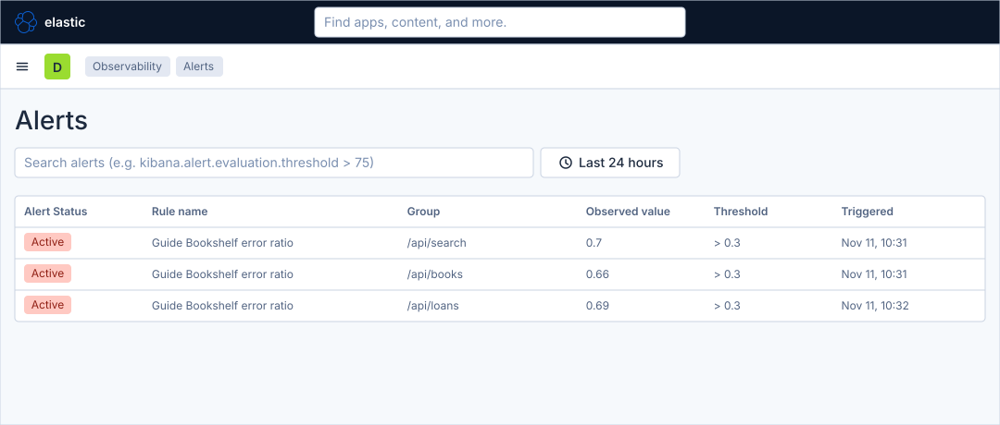
Before you start
-
Start the Kibana profile of the hands-on lab and wait about a minute:
cd lab docker compose --profile kibana up -d -
Open http://localhost:5601 and sign in as
elasticwith the passwordlab-elastic-password. When Kibana opens its full-screen welcome page, click Explore on my own. -
Do the previous guide, Create a rule with a connector. This guide does not need the webhook connector, because the rules below have no action, but it uses the same Rules pages. It also needs the data view Bookshelf logs (guides) from Upload a file and create a data view.
-
Licence: custom threshold rules and SLOs are Observability features. The SLO burn rate rule type needs a Platinum licence, which the trial licence of the lab includes. Check the licence with
curl -s -u elastic:lab-elastic-password http://localhost:9200/_license. -
What the lab feeds: the collector sends the Bookshelf logs, the traces and the APM aggregates to Elasticsearch. It sends no OpenTelemetry metrics data stream, so there are no host or system metrics. The Inventory and Metric threshold rules, the Hosts page and any CPU or memory rule have nothing to evaluate in this lab. The guide therefore builds every rule on the logs.
-
Not run end to end: the Custom threshold form, the SLO form and the burn rate rule were not completed in the lab. The labels of those screens follow the Elastic documentation and may differ slightly from yours. The steps name the control and the value to enter; follow the control, not the exact position.
-
The figures are drawings of the Kibana 9.5 user interface, not screenshots, so small details can differ from your screen. A highlighted box with a number marks the control of the step with the same number.
Steps
Four screens are used: the Rules page of Stack Management, the rule page with its three steps (Definition, Actions, Details), Discover and the SLO create page. The earlier guide in this series, Create a rule with a connector, shows the rule form on a map; come back to it when a control of a rule page is not where a figure shows it.
Open the rule form
-
Click the menu button (Toggle primary navigation) at the left of the second bar and, under Management, click Stack Management.
-
In the left menu, under Alerts and Insights, click Rules.
-
Click Create rule.
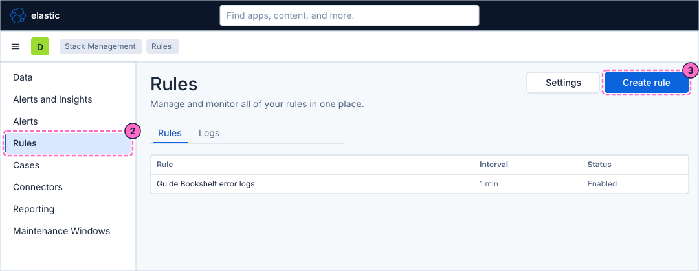
-
In the flyout Create new rule, on the tab Rule type, click the card Custom threshold ("Alert when any Observability data type reaches or exceeds a given value."). It is listed in the category Observability.
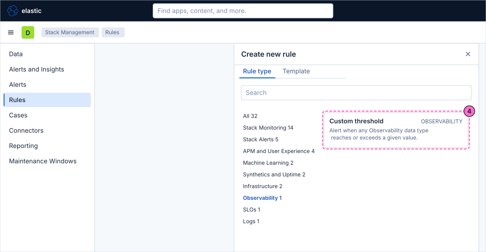
Define the error ratio
The rule divides two document counts. Aggregation A counts the ERROR lines, aggregation B counts every line, and the equation A / B is the share of errors.
-
In Select a data view, choose Bookshelf logs (guides).
-
Define aggregation A: the aggregation type Count, and in its KQL filter type the query below.
severity_text : "ERROR" -
Add aggregation B with Add aggregation: the type Count again, with no filter, so that it counts every document.
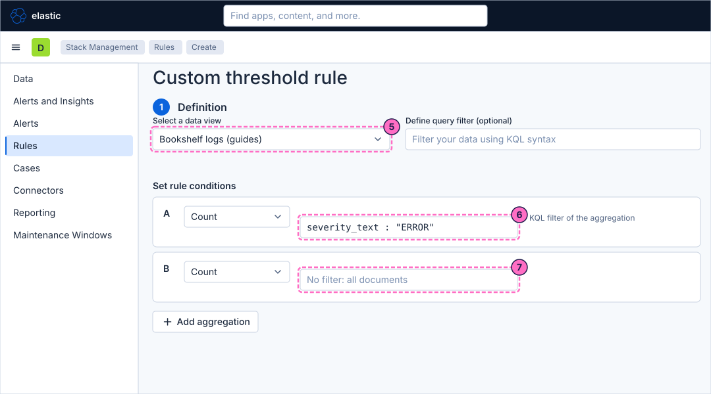
-
In Custom equation, type
A / B. -
Set the condition to Is above
0.3for the last1minute. In failing mode the load generator logs an ERROR line for about 70 percent of the requests, far above this ratio; in normal mode the share of errors is small. -
In Group alerts by, choose the field
attributes.uri. The rule then keeps one alert for each URI instead of one for the whole service. -
In Rule schedule, keep Every
1minute.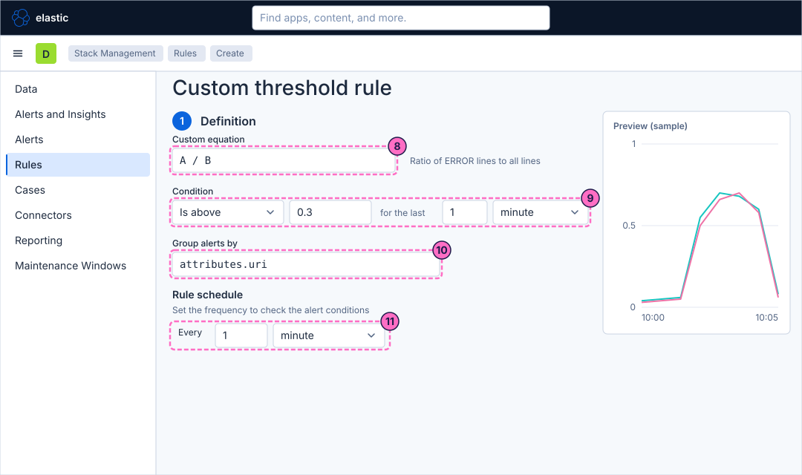
Name and save the rule
Step 2, Actions, is optional and stays empty: the alert is read in the Alerts page. Open step 3, Details.
-
In Rule name, type
Guide Bookshelf error ratio. -
In Tags, type
guide. -
Click Create rule.
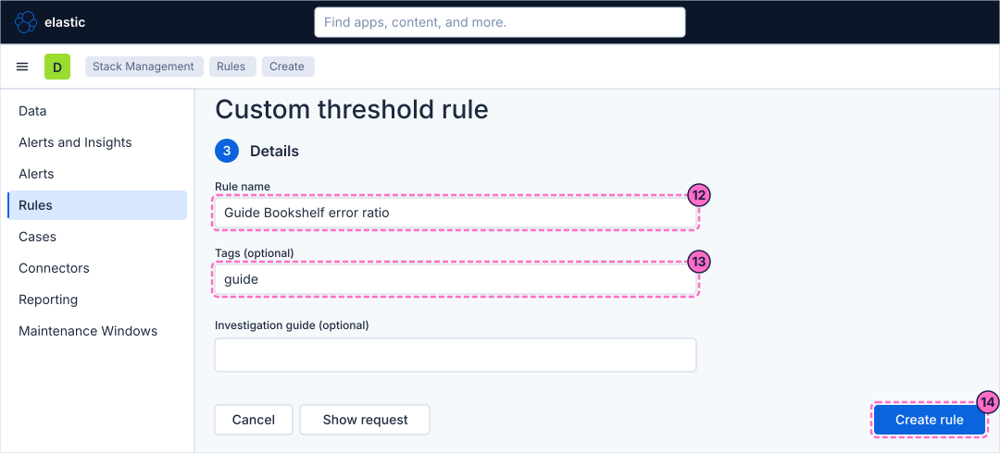
Create a rule from Discover
A query that already finds the documents you care about can become a rule. In 9.5 Discover has no entry called "Create search threshold rule" (the name used in older releases); the entry is Create alert rule in the More menu.
-
Click the menu button and, under Analytics, click Discover.
-
In the data view picker, choose Bookshelf logs (guides).
-
In the query bar, type the query below and press Enter. The histogram shows only the ERROR lines.
severity_text : "ERROR" -
Click More in the second bar and then Create alert rule.
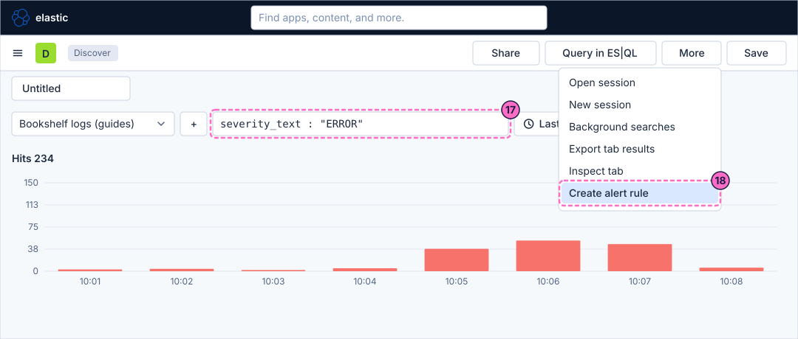
-
A rule-type chooser opens. Choose Elasticsearch query, the rule type that evaluates a search. This chooser was not opened in the lab, so its layout may differ from what you expect; if Kibana has already opened a rule page, go on with the next step.
-
Check that the rule page shows the data view Bookshelf logs (guides) and the query
severity_text : "ERROR". If either is empty, select it or type it. -
Set the condition to
WHEN count() OVER all documents IS ABOVE 20 FOR THE LAST 5 minutes.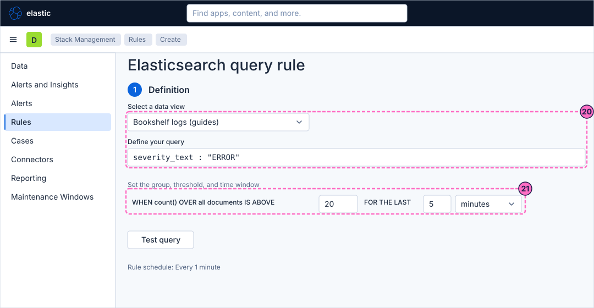
-
In step 3, Details, type the Rule name
Guide Discover error logs. If you did the previous guide, use a name different from its ruleGuide Bookshelf error logs. -
Click Create rule.
Create an SLO
An SLO turns "most requests are fine" into a number: a target for the share of good events over a time window. The rest of this guide defines that share on the Bookshelf logs. The SLOs page and its create form were read in the lab but not completed.
-
Click the menu button and, under Observability, click SLOs.
-
Click the button that creates an SLO, Create SLO. It opens the page Create SLO, which has three numbered blocks: Define SLI, Set objectives and Describe SLO.
-
Under Choose the SLI type, choose Custom Query. The other types are Custom Metric, Timeslice Metric, Histogram Metric, APM latency, APM availability and Synthetics availability.
-
In Index, open the picker Select a Data view and choose Bookshelf logs (guides).
-
In Timestamp field, choose
@timestamp. -
In Good query, type the query below. A log line counts as good when it is not an ERROR line.
NOT severity_text : "ERROR" -
Leave Total query, Query filter and Group by empty, so that every log line is a total event, and check the SLI preview chart.
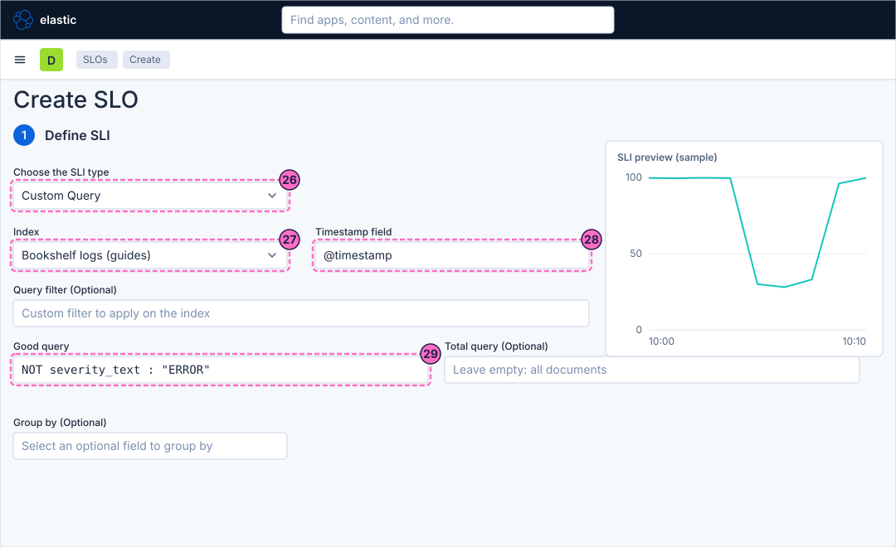
-
In block Set objectives, choose a rolling time window of
7 days. Pick a short window: the lab has only minutes of history. -
Choose the budgeting method Occurrences, which compares good events with total events.
-
Set the target to
99percent.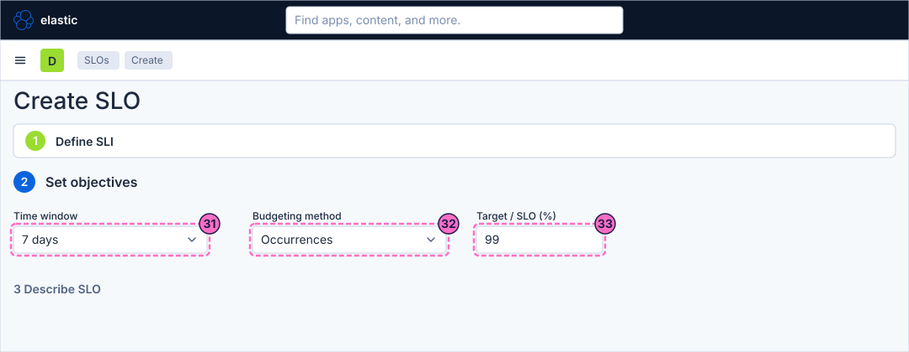
-
In block Describe SLO, type the name
Guide Bookshelf availability. -
Click Create SLO.
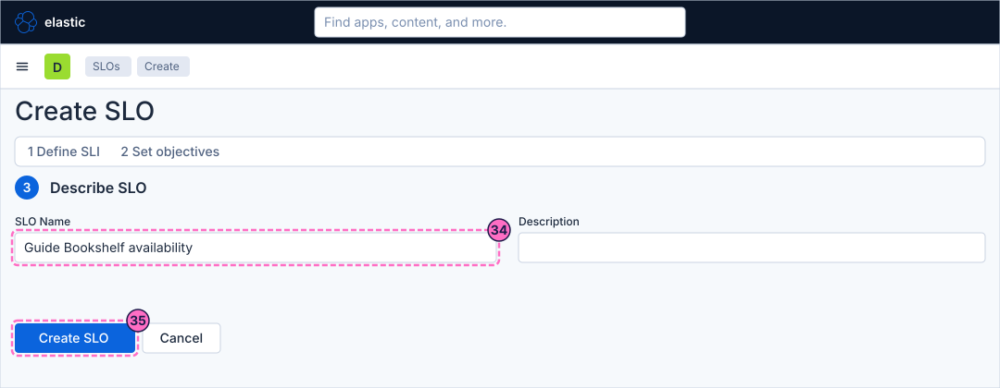
Add a burn rate rule
Kibana creates a default burn rate rule when an SLO is saved. It has default settings and no connector. Here you create your own rule, to see the form and the rule type.
-
Open Stack Management → Rules as in steps 1 to 3 and click Create rule. The category list of the flyout has an entry SLOs.
-
Click the card SLO burn rate.
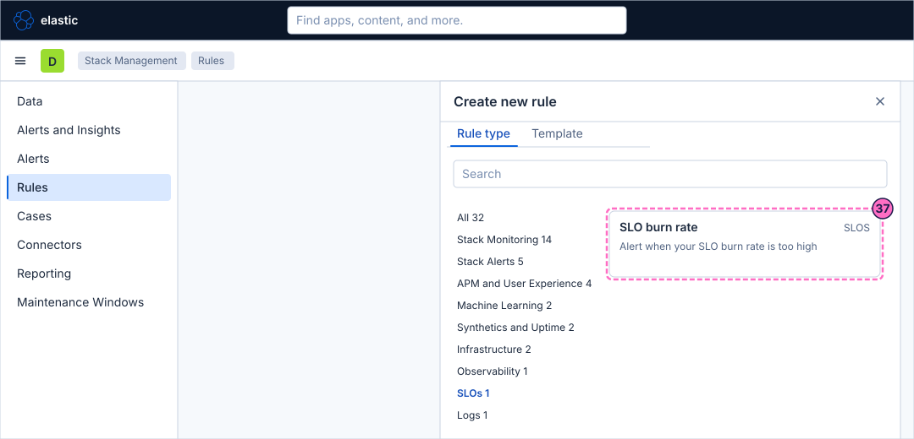
-
In the SLO selector, choose
Guide Bookshelf availability. -
Keep the burn rate windows the form proposes. Each window has a lookback period, a burn rate threshold and a severity.
-
In step 3, Details, type the Rule name
Guide SLO burn rate. -
Click Create rule.
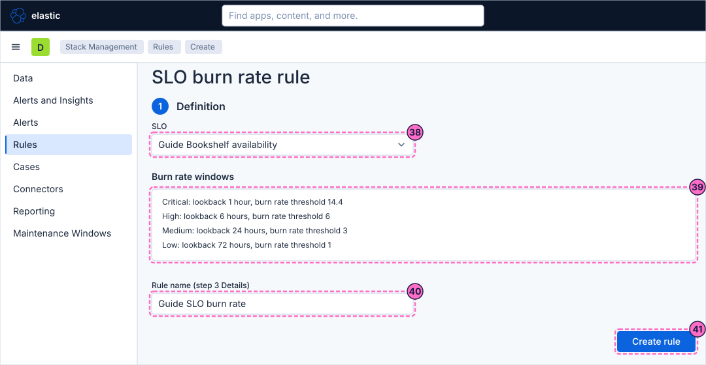
Check the result
Force errors and wait for the next runs of the rules:
curl -X POST localhost:8090/mode/failingOpen the menu, then Observability → Alerts. After a few minutes the rule Guide Bookshelf error ratio must show alerts with the status Active, one for each URI
that returns errors, with an observed value above the threshold 0.3. The rule Guide Discover error logs shows one alert.
The SLO list under Observability → SLOs shows the SLO Guide Bookshelf availability with its current SLI and the remaining error budget; the SLI drops while the failing mode runs. This was not observed in the lab.
The burn rate rule works on lookback periods of hours, so do not expect Guide SLO burn rate to become active within minutes of a short failure.
Restore normal traffic afterwards:
curl -X POST localhost:8090/mode/normalThe active alerts recover on the next runs once the last minute is clean.
Variations
-
Add a second action group to the Custom threshold rule with Add warning threshold, so that crossing a lower ratio gives a warning and crossing 0.3 gives the alert; the reference page on Observability rules explains it.
-
Group the SLO by a field with Group by, for example
attributes.uri, to get one SLO instance for each URI. -
The lab sends traces, so the APM rule types (for example the failed transaction rate) can alert on the
bookshelfservice. They are not part of this guide.
What can go wrong
| Symptom | Cause | Fix |
|---|---|---|
Custom threshold is not in the picker |
The search box of the flyout still holds a text, or the category is another one. |
Clear the search and choose the category Observability, or type |
The data view Bookshelf logs (guides) is not in the list |
The guide that creates it was skipped. |
Do the data view guide first and reopen the form. |
The alert never becomes active |
The lab is in normal mode, so the ratio of ERROR lines is below 0.3, or the group field has no values. |
Check the mode with |
The rule page shows no Create alert rule entry in Discover |
The menu More is the one of another tab, or the page is in ES|QL mode. |
Use the data view mode of Discover and a KQL query; older releases call the entry Create search threshold rule. |
SLO burn rate is greyed or missing |
The licence is not Platinum or trial. |
Check the licence with |
The SLO page shows no data |
The SLO transform has not produced its first results yet, or the index and timestamp field are wrong. |
Wait a few minutes, check Index and Timestamp field in the SLO definition and the SLI preview. |
Clean up
Keep the rules and the SLO if you follow the next guide, which acknowledges and snoozes their alerts. To remove them, delete the three rules in Stack Management → Rules
and the SLO and its default burn rate rule in Observability → SLOs. Stopping the profile with docker compose --profile kibana down -v deletes everything the lab stores.
Where to go next
-
Previous guide: Create a rule with a connector.
-
Next guide: Manage alerts, maintenance windows and cases, which works on the alerts these rules produce.
-
Reference: Observability Rules describes every Observability rule type, and SLOs covers SLI types, objectives and burn rate windows.